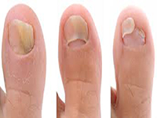

လက္သည္း ေျခသည္း မႈိတက္ျခင္း

လက္ သည္း၊ ေျခသည္း ေတြ အဝါ ေရာင္ သန္း ေနရင္ ေတာ့ မႈိတက္ ေနတာ ေသခ်ာပါျပီ။ လက္ သည္းမွာ မႈိတက္ ျခင္း ထက္ ေျခသည္း မႈိတက္ ျခင္းက ပိုအျဖစ္ မ်ားပါတယ္။ အဲလိုျဖစ္ ျပီဆိုရင္ ေရနဲ႔ ပန္းသီး ရွာလကာရည္ ဆတူ ေရာျပီး အဲဒီ ေပ်ာ္ ရည္ ထဲမွာ လက္၊ ေျခ ေထာက္ စိမ္ပါ။ ေျခာက္ ေအာင္ သုတ္ ျပီး လက္ သည္း၊ ေျခသည္း၊ လက္ သည္း ခြံ၊ ေျခသည္း ခံြတို႔ကို သံလြင္ ဆီလိမ္း ပါ။ အနည္း ဆံုး တစ္ လ သို႔ ေပ်ာက္ ကင္း သည္ အထိ ျပဳလုပ္ ပါ။